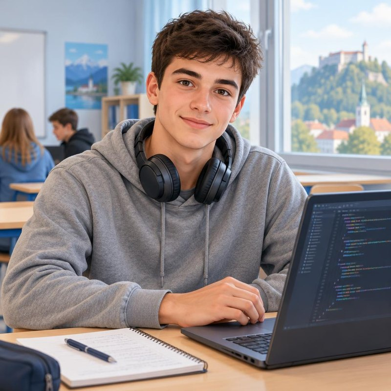

Opis projekta
Pri učenju se večkrat zatakne pri nalogi ali snovi, ki je sam ne razumeš, profesor pa takrat ni na voljo. Dijaki potem sprašujemo sošolce na Discordu ali v zasebnih sporočilih, vendar se vprašanja hitro izgubijo med drugimi sporočili. Hkrati je na šoli veliko dijakov, ki določeno snov dobro znajo in bi radi pomagali, ampak nimajo mesta, kjer bi to lahko ponudili.
Zato v skupini razvijamo DijakPomaga, spletno platformo za medsebojno pomoč dijakov. Dijak objavi, pri katerem predmetu ali nalogi potrebuje pomoč, drugi dijaki pa se mu javijo. Vsak ima svoj profil, kjer označi predmete, pri katerih lahko pomaga, zato se da pomoč poiskati tudi po predmetu in letniku.
Prva verzija (MVP) bo imela samo dve funkciji: objavo prošnje za pomoč in odziv na prošnjo. Vse ostalo pride v verziji 2.0, kot je zapisano v projektni listini spodaj.
Projektna listina
Projektna listina je dogovor naše ekipe DijakPomaga o tem, kateri problem rešujemo, kaj bo v prvi verziji in kdo je za kaj odgovoren. Izpolnili smo jo po šolskem obrazcu. Celotna listina je v repozitoriju: docs/PROJEKTNA_LISTINA.md, tudi kot Word dokument.
Problem in cilj MVP
Dijaki ob težavah pri učenju pomoč iščejo na Discordu ali v zasebnih sporočilih, kjer se vprašanja hitro izgubijo, in ne vedo, kdo na šoli zna določeno snov. Dijaki, ki bi radi pomagali, nimajo mesta, kjer bi pomoč ponudili.
Cilj MVP: spletna aplikacija, v kateri dijak prek obrazca objavi prošnjo za pomoč pri predmetu, drugi dijaki pa na seznamu vidijo odprte prošnje in se nanje s klikom »Pomagam« odzovejo.
V obsegu – MVP (2 funkciji z bazo)
- Objava prošnje za pomoč: HTML obrazec, PHP validacija, zapis v bazo (INSERT INTO prosnje): ime, razred, predmet, opis težave in kontakt.
- Pregled prošenj in odziv: izpis iz baze (SELECT) na karticah s Pico.css, filter po predmetu in gumb »Pomagam«, ki prošnji nastavi status »v teku«.
Izven obsega – faza 2.0
- prijava s šolskim računom in profili,
- klepet v živo med dijakoma,
- ocene in točke za tutorje,
- obvestila po e-pošti in na telefon,
- mobilna aplikacija in koledar terminov.
Vloge v ekipi
| Vloga v ekipi | Član | Glavne zadolžitve |
|---|---|---|
| Vodja ekipe & Backend razvijalec | Marko Laptuš | načrtovanje PHP logike, usklajevanje dela |
| Frontend razvijalec | Timotej Pučko | HTML5 vmesnik s Pico.css: obrazec, seznam in filter |
| Skrbnik podatkovne baze & cPanel | Marko Laptuš | tabele v MariaDB, namestitev na šolski strežnik |
| Testiravec & Dokumentalist | Lan Lerher | Kanban v GitHub Projects, testiranje, README |
Tehnološki sklad
| Komponenta | Orodje | Potrditev |
|---|---|---|
| Kodno okolje | github.dev v brskalniku | DA |
| Zaledje in baza | PHP 8 + MariaDB na šolskem cPanelu | DA |
| Oblikovanje | Pico.css (prek CDN) | DA |
| Verzioniranje | Git + šolski GitHub repozitorij | DA |
| Projektno vodenje | GitHub Projects (Kanban) | DA |
Skupni strošek orodij je 0 €, ker uporabljamo odprto kodo in šolsko infrastrukturo. Persona in zemljevid empatije, ki sta tudi del listine, sta opisana spodaj.
Persona

Marko Novak
Dijak, ki išče in nudi pomoč
»Včasih potrebujem samo nekoga, ki mi zna snov razložiti na preprost način, hkrati pa bi tudi sam rad pomagal sošolcem pri stvareh, ki jih dobro razumem.«
- Starost: 18 let
- Šola: 3. letnik, program tehnik računalništva, SERŠ Maribor
- Tehnično znanje: napredno (HTML, CSS, JavaScript, osnove PHP in MySQL, GitHub)
- Orodja: VS Code, GitHub, Discord, Figma, spletna učilnica
Kdo je Marko
Marko je zavzet dijak, ki ga zanimajo računalništvo, programiranje in nove tehnologije. Pri nekaterih predmetih mu gre zelo dobro, pri drugih pa ima pri težjih nalogah težave. Ko potrebuje pomoč, najprej vpraša sošolce na Discordu, vendar je tak način nepregleden in odgovor pogosto dobi šele, ko ga ne potrebuje več. Ker sam dobro obvlada programiranje, bi rad pomagal tudi drugim, a ne ve, kdo pomoč sploh potrebuje.
Cilji in motivacija
- hitro najti sošolca, ki mu razloži snov ali nalogo,
- svoje znanje deliti z drugimi in jim pomagati,
- z razlaganjem drugim še sam bolje utrditi snov,
- najti sošolce za skupno učenje.
Frustracije
- ne ve, na koga se lahko obrne, ko se zatakne,
- ni enega mesta, kjer bi videl, kdo pomaga pri katerem predmetu,
- vprašanja na Discordu se hitro izgubijo,
- dijaki z znanjem in dijaki s težavami se težko najdejo.
Zemljevid empatije
Kaj misli in čuti?
- »Koga lahko vprašam, ko profesorja ni?«
- Vesel je, ko sošolcu pomaga rešiti problem.
- Bolj je motiviran, ko se uči skupaj z drugimi.
Kaj sliši?
- Profesorje: »Če česa ne razumete, vprašajte.«
- Sošolce: »A kdo zna rešiti to nalogo?«
Kaj vidi?
- Sošolce s težavami, ki ne vedo, koga vprašati.
- Nepregledna sporočila na Discordu.
- Spletno učilnico, ki je za gradivo in naloge, ne pa za pomoč med dijaki.
Kaj govori in dela?
- Na Discordu sprašuje za pomoč pri težjih nalogah.
- Pomaga sošolcem pri programiranju.
- Deli povezave, zapiske in razlage.